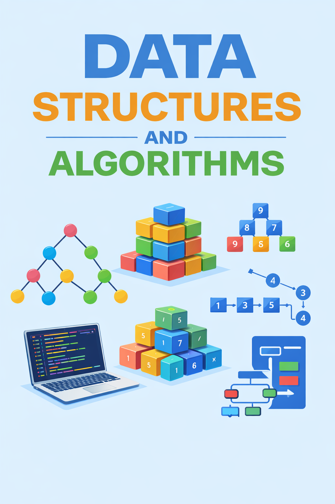

DATA STRUCTURES AND ALOGRITHMS
About the book
About the book
1
INTRODUCTION
ALGORITHMS
2
Recursion & Divide-and-Conquer
3
FRACTAL
4
Dynamic Programming
5
ANALYSIS OF ALGORITHM
6
SORTING
DATA STRUCTURES
7
Pointers
8
FILE & STREAM
9
Elementary Data Structures
10
Trees & Binary Trees
11
Balanced Binary Search Tree
12
B-tree
13
Priority Queues and Heaps
14
Hash Table
GRAPHS
Table of contents
About the book
DATA STRUCTURES AND ALOGRITHMS
Author
Bùi Tiến Lên
Published
January 1, 2026

About the book
Data Structure and Algorithms
1
INTRODUCTION